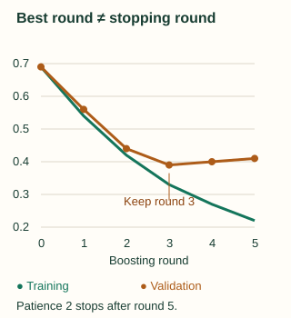

Regularization, Early Stopping & Model Selection
The earlier chapters explained how a tree earns its place in the ensemble. A reduction in training objective is still only a training result. This chapter asks how much capacity to allow, how to select the number of rounds, and how to compare models without repeatedly learning from the test set.
Separate the size of a correction from its complexity
The learning rate scales each tree's contribution. Depth or leaf count determines how complex that correction can be. A shallow tree may only correct broad patterns; a deep tree can isolate small groups. Minimum leaf support restricts corrections that rely on too little information, and leaf-value penalties limit their magnitude.
A sum of stumps on original input features has the form $c+f_1(x_1)+f_2(x_2)+\cdots$: each stump contributes to just one feature's effect. Such an additive score cannot represent XOR over two binary inputs. If XOR requires high scores at (0,1) and (1,0) and low scores at (0,0) and (1,1), adding the two “high” inequalities contradicts the sum of the two “low” inequalities. A depth-two tree can express XOR by asking about the second feature within a branch of the first.
Engineered interaction features can change what a stump sees, so state whether the claim is about the original inputs. More rounds do not remove a structural restriction on every base learner.
Learning rate changes the path, not just the final scale
With the four regression rows, one rate-1 step gives predictions [3,3,9,9]. Two rate-0.5 steps give [3.75,3.75,8.25,8.25]. Both have learning-rate-times-round-count equal to 1, yet their models differ. The second small step was fit to updated residuals, and its leaf values were ±1.5 rather than ±3.
Smaller rates often require more rounds. Compare rates using validation over a sufficient range of rounds, not by forcing the same tiny tree budget on every rate. Very small rates may underfit within your compute budget; many large steps may chase noise. “Smaller is always better” is not a tuning rule.
Keep the best round, not the last attempted round
Suppose the following mean losses are measured on fixed training and validation sets. They are an illustrative trace, not results from a benchmark. Lower is better. Set patience to two rounds without a strict validation improvement.
| Round | Training loss | Validation loss | Selection state |
|---|---|---|---|
| 0 | 0.69 | 0.69 | Baseline best |
| 1 | 0.54 | 0.56 | New best: 1 |
| 2 | 0.42 | 0.44 | New best: 2 |
| 3 | 0.33 | 0.39 | New best: 3 |
| 4 | 0.27 | 0.40 | One round without improvement |
| 5 | 0.22 | 0.41 | Two rounds: stop, restore round 3 |

At inference, use the baseline and the first three trees under this convention. Some APIs automatically use a best-iteration range, some keep all fitted trees, and others require an explicit limit or model snapshot. Verify the actual prediction behavior rather than assuming early stopping restores the best model for you.
best_loss = validation_loss(baseline)
best_round = 0
stale = 0
for t in range(1, max_rounds + 1):
fit_and_add_one_tree()
loss = validation_loss(current_model)
if loss < best_loss - min_delta:
best_loss, best_round, stale = loss, t, 0
else:
stale += 1
if stale >= patience:
break
return model_using_first(best_round) # include the baselineHere min_delta=0 makes an equal loss a non-improvement. Different tolerances and comparison conventions can select different iterations; record them. Patience responds to a validation trace, which may itself be noisy. When appropriate, compare across valid folds or several seeds without turning the final test into another tuning loop.
Check: after losses 0.39, 0.40, 0.38, does patience two stop?
No. The loss 0.38 is a new best and resets the stale count to zero. Patience counts consecutive non-improving rounds under the stated comparison, not the total number of rises ever observed.
Sampling can regularize, but boosting is still sequential
Row subsampling fits a correction on only some training observations at a round. Feature subsampling limits which features compete. Both add randomness and may reduce overfitting or computation. They do not turn the ensemble into bagging: correction targets still depend on the current boosted model.
Very small samples can give rare classes or small subgroups unstable support. Match class weighting and sampling to the decision problem. Weighting changes the fitted objective; it can also change the relationship between raw model probabilities and deployment prevalence. Evaluate calibration and thresholds separately when they matter.
A tuning procedure you can defend
- Define the prediction moment. Decide which features are available then, what population you will serve, and whether validation must respect time or entities.
- Reserve the final test. Fit every learned transformation inside the training partition of each validation split. Compare against a simple baseline.
- Choose the metric before searching. For imbalanced classification, connect ranking, calibration, or threshold-specific metrics to the actual action. Accuracy alone can reward the majority baseline.
- Find a workable tree capacity. Compare a small range of depth/leaf limits and support requirements at a moderate learning rate, using early stopping.
- Refine the training path. Try rates and enough rounds, then sampling and penalties if diagnostics justify them. Use comparable total tuning budgets when comparing libraries.
- Freeze the selection procedure. Decide how to refit, calibrate, and choose thresholds. Assess that final procedure once on untouched test data.
If you refit using training plus validation rows, you cannot continue using those same labels as held-out early-stopping evidence. One option is to fix the round count selected earlier or through cross-validation, then refit; another is to retain a separate stopping set. State what you did, because changing the training set can change the best number of rounds.
Read training and validation behavior together
| Observed pattern | Hypothesis to investigate | Next experiment |
|---|---|---|
| Both losses remain high | Insufficient useful features, unsuitable loss, or too little capacity | Check the baseline and features; allow enough rounds or a richer correction tree. |
| Training falls, validation rises | The path is fitting details that do not transfer | Use the best round; compare support, capacity, rate, and sampling. |
| Random validation is strong, future validation is poor | Leakage, drift, or mismatched evaluation | Audit feature timestamps and chronological splits before tuning. |
| Ranking is strong, decisions are costly | Threshold, calibration, or action costs are mismatched | Evaluate probabilities and select thresholds on valid held-out predictions. |
Account for deployment before declaring a winner
Store the preprocessing, feature schema, baseline, trees, learning rate, selected round count, and class mapping. Record library versions, seed, data boundaries, objective, and metric. Test that offline and served predictions agree, especially around missing values and new categories.
Prediction cost grows with the number of visited tree nodes; multiclass models may store several trees per round. Compare batch and single-row latency on realistic hardware. Monitor data quality, important subgroups, and performance when delayed labels become available. A good validation score does not make a model insensitive to a changed population.
The final workshop combines derivations, code, and these deployment decisions into a mock interview.
Sources and further reading
- scikit-learn: Early stopping example — Validation-based round selection.
- XGBoost: Early stopping — API-specific prediction and iteration behavior.
- scikit-learn: Data leakage — Training and selection boundaries.